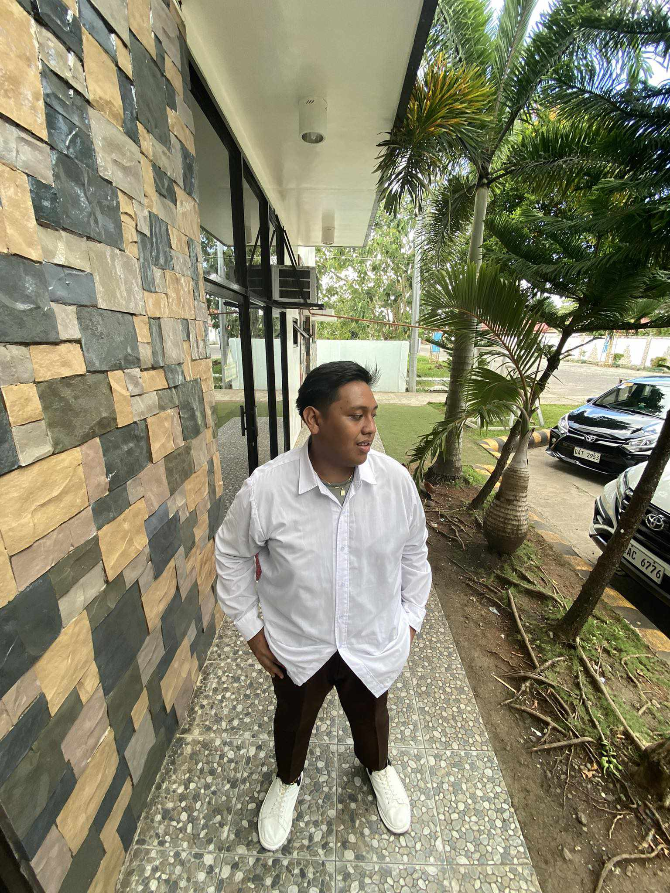

I chose IT for the reason that IT is a rapidly expanding field with a high demand
for skilled professionals. I chose this course, because I can tap into a wide range
of career opportunities and job security.We live in a digital age where technology
plays a crucial role in almost every aspect of our lives. Studying IT allows me to
understand and contribute to the development of new technologies, making a positive
impact on society. IT professionals often face complex challenges and are constantly
problem-solving. I enjoy analytical thinking and finding innovative solutions,
this field can provide me with a fulfilling career.
|
I'm Joash Miguel Naquimen my nickname is ging2 and my birthday is January 29.
I like playing some online game like ml cod NFS and I also love to cook and do experiment dish and I love to learn programming. |
 |
|---|